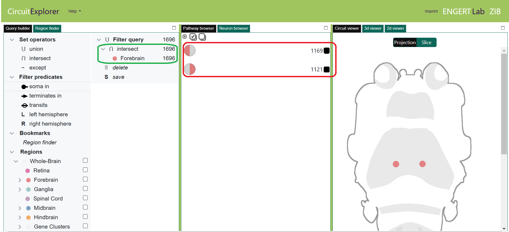
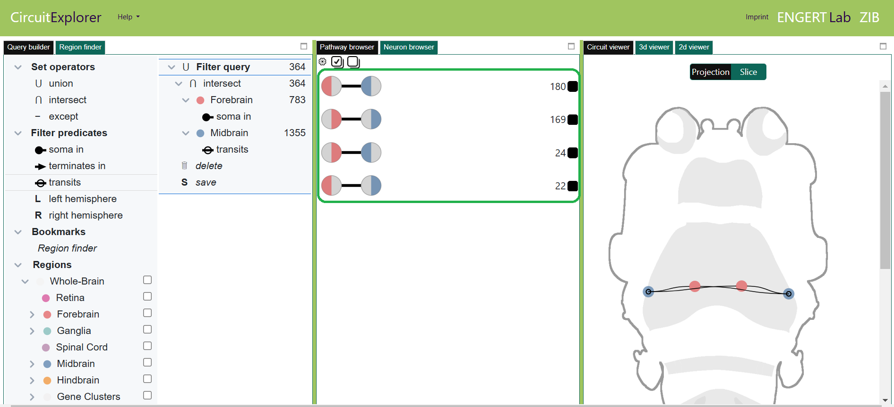
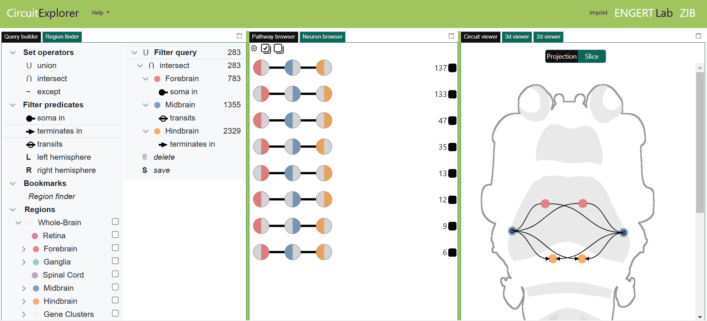
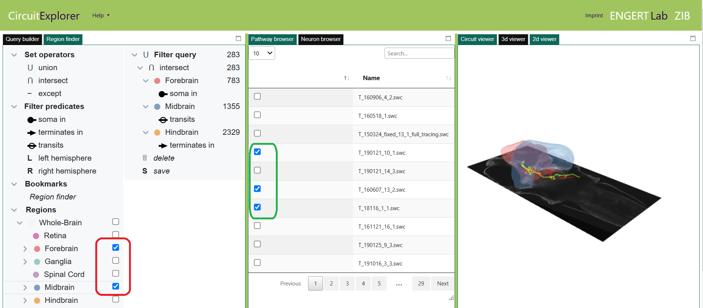

Elementary case study
-
This tutorial demonstrates a simple query operation and how the corresponding neuron pathways are generated.
The exact query is to “filter subsets of neurons having their somas in the Forebrain, transit through the Midbrain, and terminate in Hindbrain”.
To do so, please follow the steps described below:
-
Restart FishExplorer by hitting the refresh button of the browser.
This will start the 3D viewer as the default window, as shown below.
Click the “Analysis” menu (encircled red in the image below).
As a result, the “CircuitExplorer” button (encircled green in the image below), will appear.

-
Click the “CircuitExplorer” button. As a result, the CircuitExplorer page,
as shown in the image below, will appear in the new tab. If you are a first user,
please read the “Getting started” tutorial in order to know the basics of the panels.

-
We started by dragging the intersect operator and the Forebrain region into the filter query component.
By default, it shows the number of neurons for both the left and right hemisphere (encircled red
in the image below).

-
Next, we dragged the "Midbrain" and applied
the filter predicate “soma in” to "Forebrain" and “transits” to "Midbrain".
The pathway browser shows four possible connections
(encircled green in the image below), will appear.
- Fl (forebrain left hemisphere) -> Ml (midbrain left hemisphere)
- Fl (forebrain left hemisphere) -> Mr (midbrain right hemisphere)
- Fr (forebrain right hemisphere) ->Ml (midbrain left hemisphere)
- Fr (forebrain right hemisphere) -> Mr (midbrain right hemisphere)

-
Next, we dragged “Hindbrain” into the
query component and applied the “terminates in” predicate.

-
Next, we load the anatomical brain regions “Forebrain ” and “Midbrain” into the 3D viewer
by clicking the checkboxes in the back of the regions in the “Hierarchical query builder” (encircled red in the image below).
Finally, we load the neurons using “Neuron browser” (encircled green in the image below).
